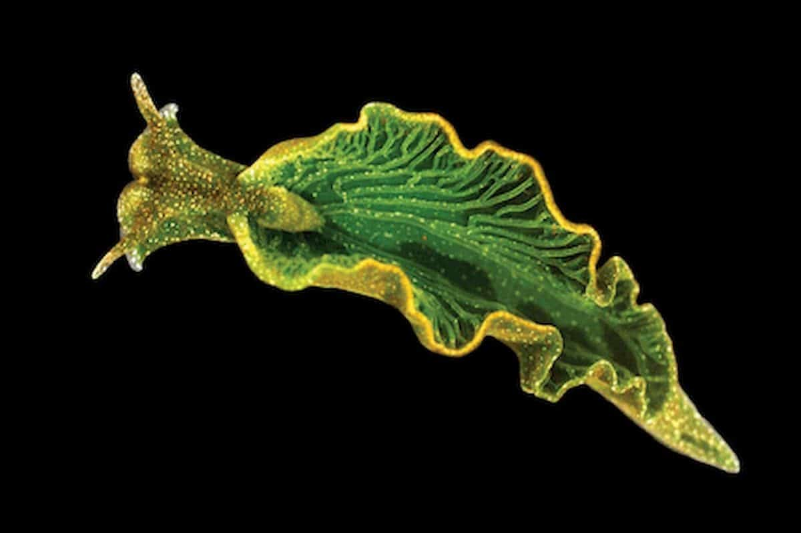

Elysia chlorotica
Elysia chlorotica è un animale marino dal colore verde brillante e dalla forma di foglia ed è uno dei pochi animali in grado di vivere per mesi utilizzando la sola energia solare.
Lunghezza media: 2 - 3 cm
Distribuzione e habitat: costa orientale del Nord America fino alle coste della Florida.
Riproduzione: ermafrodita.